End log
.
.
.
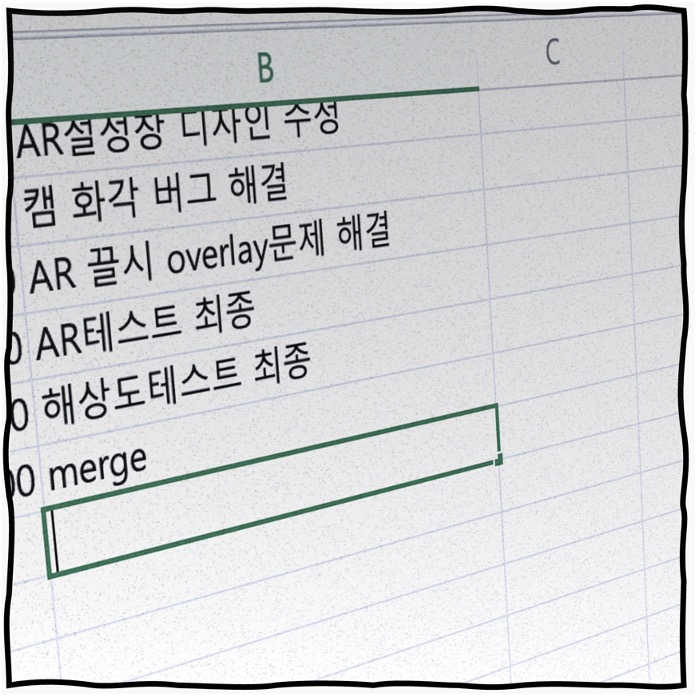
업무 일지.
마지막 행에서 깜빡이는 커서.
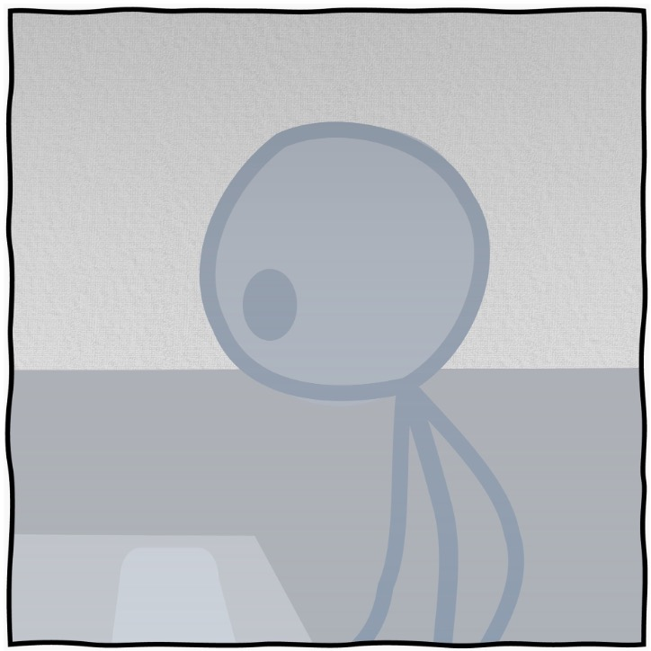
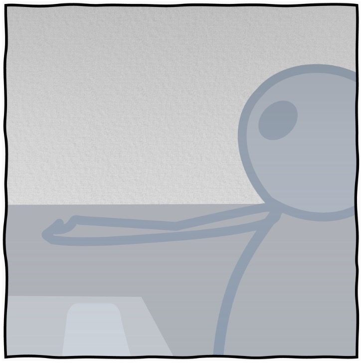
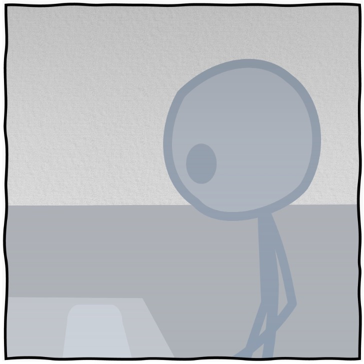
끝났다.
패치 작업.
근 3개월간 이것만 보면서 산 것 같다.
몸도, 정신도 말이 아니다.
그동안 부서 동료들도 멀끔한 얼굴을 본 적이 없다.
아직 일이 끝난 건 아니다.
패치 직후에 수정사항은 항상 발생한다.
그럼 또 달려야 한다.
그래도 오늘은 퇴근할 수 있다.
집에 가서 한숨 돌리자.
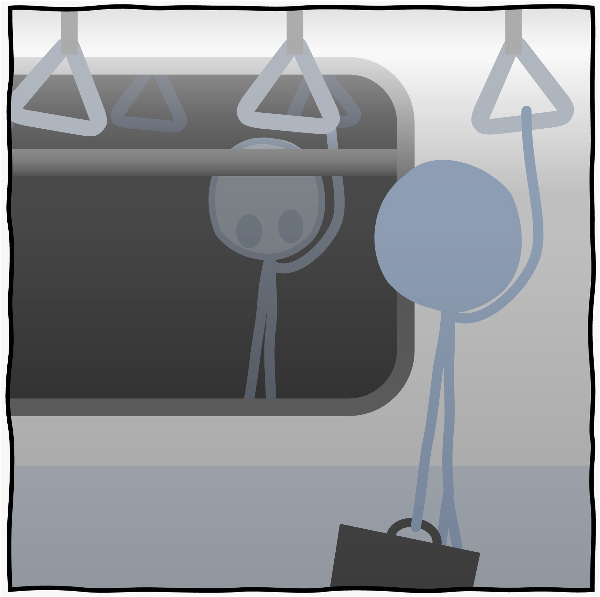
밤을 하루 샌 뒤에는 피곤해서 잠밖에 생각나지 않지만,
그게 몇 날 며칠이 되면 오히려 몽롱하게 깨있을 때가 있다.
트랜스 상태처럼.
이런 날에는 바깥 어디든 잠깐 앉아서 생각을 정리하고 싶어진다.
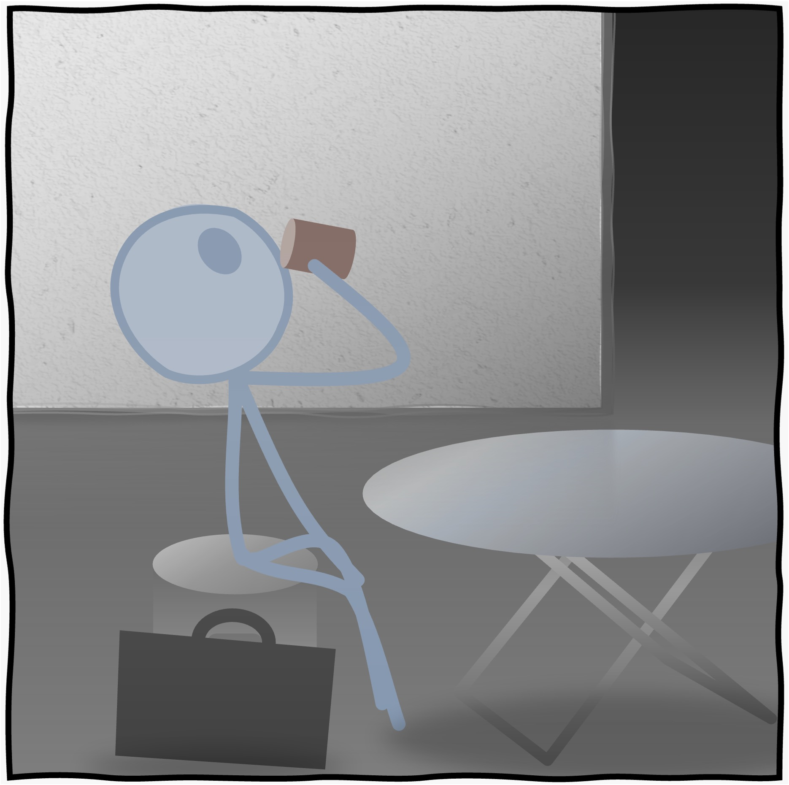
원 테두리의 세상.
좁게 나 있는 길을 따라,
한 걸음 한 걸음 걷는다.
제 3의 세상.
안과 밖의 사이.
모순이 양쪽에서 짓누르는 곳을 걷는다.
좁은 세상.
좁은 삶.
홀로 걸어왔다.
터벅, 터벅.
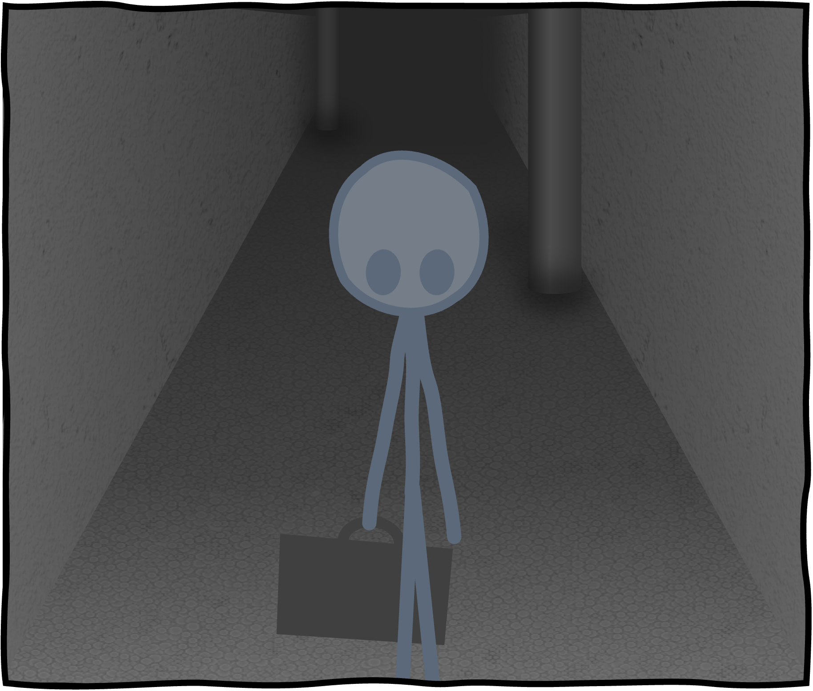
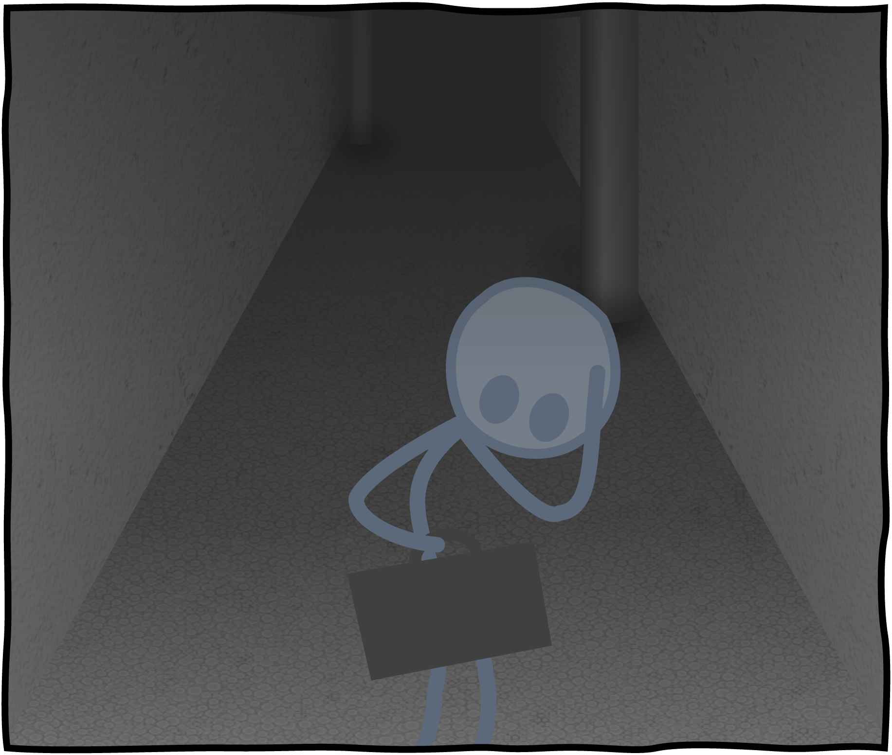
머리가 지끈거린다.
역시 피로가 누적된 게 큰가보다.
살짝 어지러워서 잠깐 멈춰섰다.
한 캔밖에 안 마셨는데.
내가 원래 이렇게 술이 약했
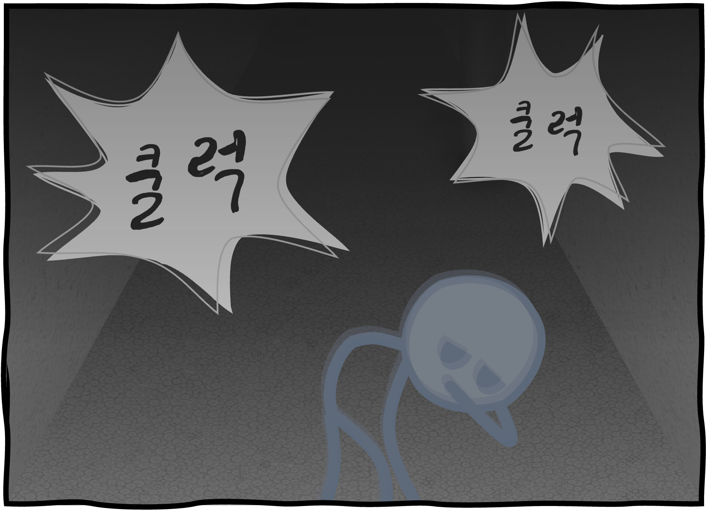
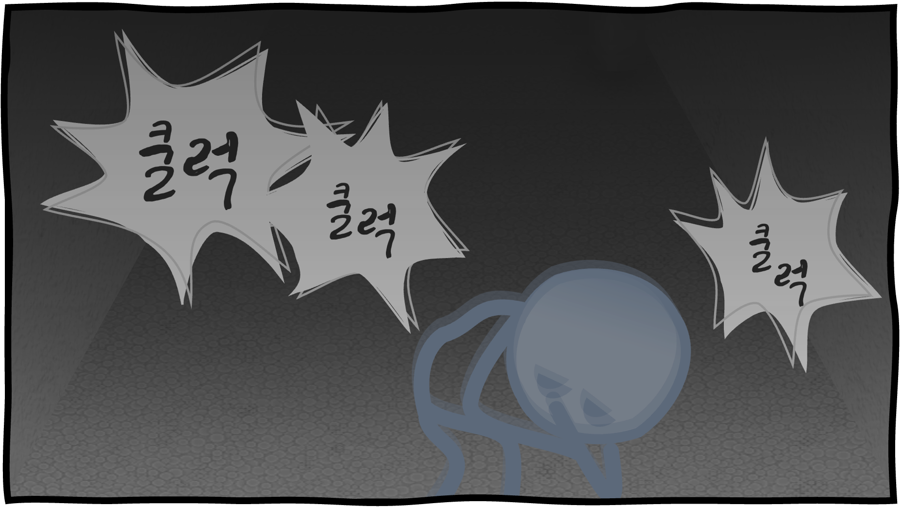
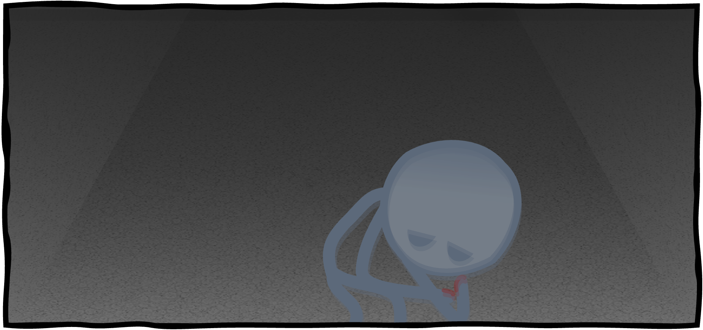
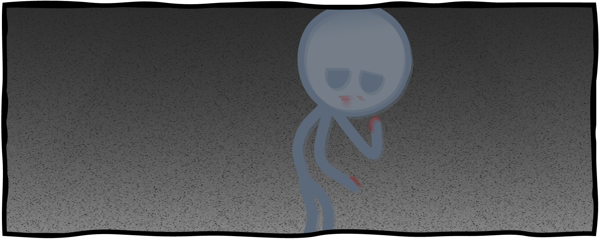
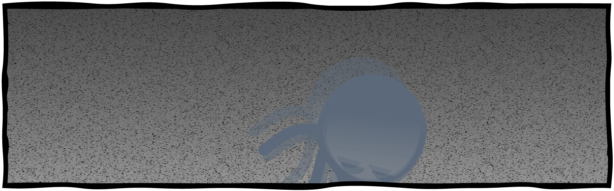
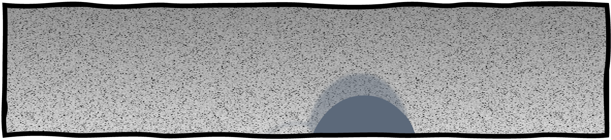
털썩
'다음'을 입력합니다.